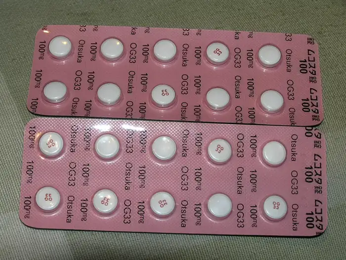
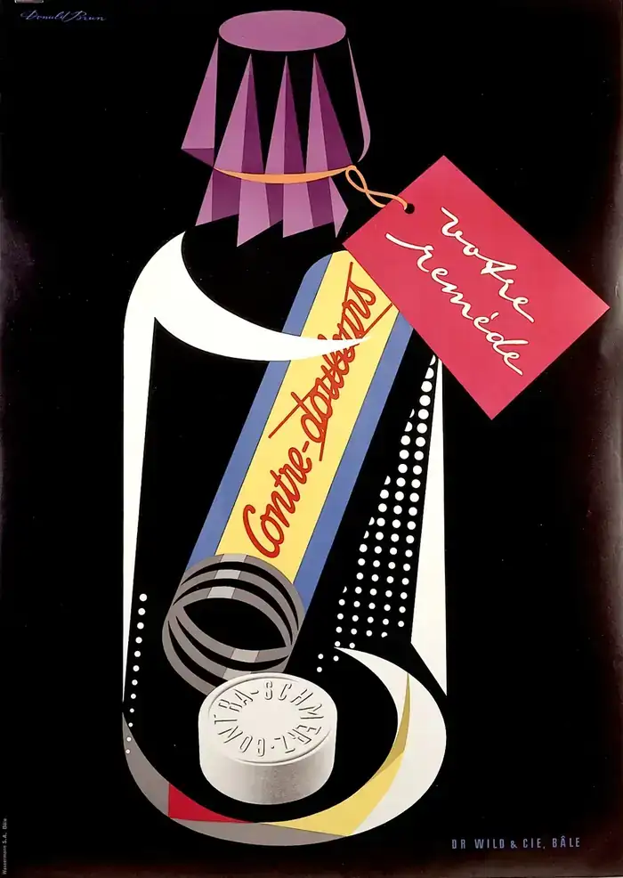
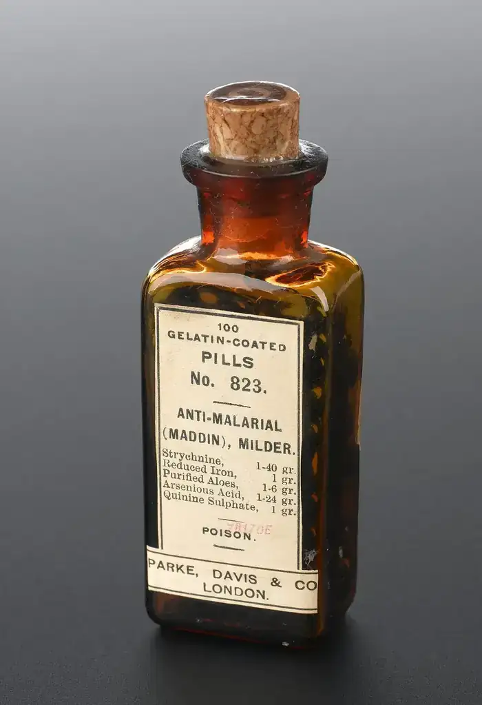

The material
In 2009 a Reddit thread drew attention to a website, Lake City Quiet Pills, that appeared to host obituaries and job listings for people who did not exist, alongside a private forum. Screenshots and archives of the material circulated, and the site disappeared.
Maps, diagrams and images






The interpretations
Readings have included a front for mercenaries, a private community, and an art project. The archived material is real; no account from an operator has been verified, and the evidence is a set of screenshots and cached pages.
The archive files it as live debate, and notes that the archive is the evidence.
Documented: the site and the archived material.
Documented: the Reddit discussion.
Not established: who ran it or why.
Readings: several, none confirmed.
The honest label: live debate.
Why it is in the archive
Because it is a case where the evidence is a cache and the conclusion is a story.
Open resources on this topic
- PapersOpen-access articles: DOAJ · PubMed Central · Internet Archive Scholar
- BooksPublic-domain and borrowable copies: Open Library · Project Gutenberg · Google Books · Internet Archive
Cite this page
Momin, S. (2026). Lake City Quiet Pills. The Larger World Archive. https://drsamonline.github.io/LARGE_GLOBE/lake-city-quiet-pills.htmlMomin, Sohil. “Lake City Quiet Pills.” The Larger World Archive, 2026, https://drsamonline.github.io/LARGE_GLOBE/lake-city-quiet-pills.html.Momin, Sohil. “Lake City Quiet Pills.” The Larger World Archive, 2026. https://drsamonline.github.io/LARGE_GLOBE/lake-city-quiet-pills.html.@misc{lake2026lake,
author = {Momin, Sohil},
title = {Lake City Quiet Pills},
year = {2026},
howpublished = {The Larger World Archive},
url = {https://drsamonline.github.io/LARGE_GLOBE/lake-city-quiet-pills.html},
note = {Last reviewed 20 November 2026}
}Last reviewed 20 November 2026 · Corrections policy · this page is not peer reviewed
Sources for this page
- Wikipedia, “Reddit” — the platformen.wikipedia.org
- Wikipedia, “Internet Archive” — the preservationen.wikipedia.org
- Wikipedia, “Hoax” — a possibilityen.wikipedia.org
- Wikipedia, “Internet art” — a possibilityen.wikipedia.org